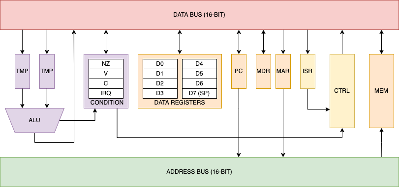

Techno-Sorcery
"Man is still the most extraordinary computer of all."
A 16-bit Von Neumann architecture CPU with an extremely orthagonal CISC instruction set, much akin to the Motorola 68k.
ATLAS CPU-16
The CPU-16, from Atlas Digital Industries, is a 16-bit CISC minicomputer based around the 74LS181 ALU. Its custom architecture is somewhat inspired by the Motorola 68000.
Links
Github
Infosheet
Assembler demo
"Hello, world!" demo
Architecture

Eight general-purpose registers are at the user's disposal (D0-D7). As they are addressed within the instruction word, any data register can be used as an opperand for supported addressing modes. For implicit stack operations, such as subroutine jumps and link operations, D7 is used as the stack. And like the 68000, the stack grows DOWN. Separate from the general purpose register file is a 16-bit condition register (split into processor control status and flags), and a 16-bit program counter.
The instruction set is extremely orthagonal, allowing the user to use any set of addressing modes with (nearly) any instruction. Supported addressing modes include register, direct, program counter relative, register indirect, register indirect + offset, register indirect with post-increment, register indirect with pre-decrement, and immediate. In addition, special "quick" instructions can store an immediate from 0-7 in the instruction word. Because they are only a single word long, these instructions save significant time and memory.
As the computer's address bus is 16-bits wide, it can directly address up to 64K words at once. For the sake of simplicity, it will (for now) feature a flat memory map with the first 48k delegated to the RAM, the next 8k delegated to device IO, and the final 8k delegated to ROM
The instruction set includes a variety of different conditional branching instructions, which make use of the program counter relative addressing mode. They test for each of the arithmetic flags: negative, zero, overflow, and carry.
The architecture includes seven individually maskable interrupts. It can also be halted both internally and externally, allowing for direct memory access.
Although CISC architectures tend to get a bad-rap these days, I felt that a well-designed one would be a perfect fit for the CPU-16. Not only would going with a microcoded CISC architecture increase my instruction density and thus save memory, but it would also let me use a memory word-size of 16-bits (versus the 48-bit microcode width).
A two-phase clock is used in order to avoid clock skew. The microcode flip-flops are loaded on the first phase, and all other synchronous chips are clocked on the second.
A paging unit and modifications to add permission levels are in the works. However, they won't be realized until I've finished building the base system
© Hayden Buscher ~ 2022